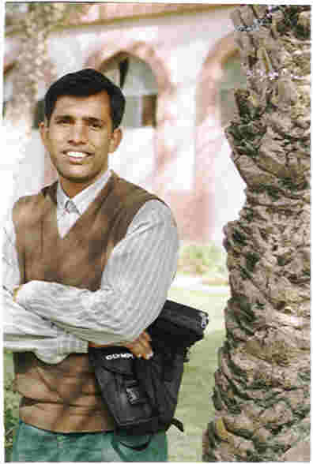

A website that is committed to improving society through helping the children of the world.
A website that is committed to improving society through helping the children of the world.

The Astrala Clinic is blessed with a very talented leader who is volunteering a good majority of time to oversee the clinic. Please take a minute to look over his credentials.
The following is
an excerpt from a letter that was written to Dr. Richard Kirby, Executive
Director of the Stuart C. Dodd Institute. Dr. Kirby and Mr. Aziz have been
exchanging letters for over the last ten years. The only funding that the Astrala
Clinic currently receives is fifty dollars a month that is being privately
funded by Dr. Kirby.
Current
Activities, Religious Community & Movements, Service to the Community,
and the Needs of Senior Citizens in My Area.
In my area there are
two communities, both having different religions. These are the Christian community
and the Muslim community. About my religious worshipping, I
am working regardless of religion and race. Our Purpose is first to create
peace and second to think about future betterment. For this very purpose we have not
a fully organized type of movement, but we have gathered some good quality
persons from both sides and they work for each other. This is the reason that in my area
there is so much peace.
Whether it is the work of a mosque or of a church every body
cooperates. This is the
result of my and some of my colleague's hard work. In this way we are not only making
peace work, but also serving the community.
I'm doing my best to
serve the community in various ways.
But all of my activities are limited due to the absence of a
suitable platform so I'm not able to deliver my services fully. Although there is a need to work
in every field, the needs of the senior citizens in my area are
numerous. Due to the poverty
factor the senior citizens have to face so many difficulties. They are unable to enjoy their
lives only because of the poverty factor. They are not provided medical
facilities only because the treatment expenses are beyond their
reach. Some of them have not
any place to go so they spend their nights in the streets. They are deprived of almost every
facility of life. There is no
reading room or place for them to be aware of the world but instead they
are only and only thinking about their food and how to spend their daily
life. Life is a burden for
them. So there is a lot we
can do for them. We can provide them shelter, food, medical treatment, a
place to read various papers, some activities to make their lives full of
excitement and so many other things which can make their lives
peaceful.
|
Send mail to azamchaudri@gmail.com with
questions or comments about this web site. |